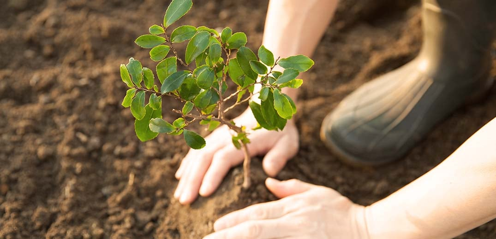
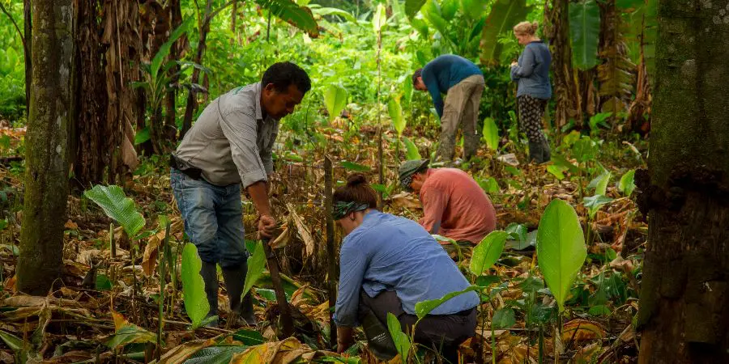

Welcome to the Forest Conservation Program, where our commitment is to protect and sustainably manage our invaluable forest resources. Our mission is to strike a balance between human needs and environmental conservation, ensuring a harmonious coexistence between nature and society.
At the core of our philosophy is the belief that responsible stewardship of forests leads to a healthier planet. Explore the pages below to discover who we are, our initiatives, and how you can actively contribute to the cause.
Our Initiatives
Embark on a journey through our diverse range of initiatives that aim to preserve the beauty and functionality of our forests:
Selective harvesting: Removing only mature, overcrowded, diseased, dying, or poorly formed trees.
Sustainable forest management: Managing forests in a way that meets the needs of the present without compromising the ability of future generations to meet their own needs.
Sustainable harvesting: Providing a constant supply of wood resources throughout the landscape, with future timber yields unaffected or improved by current harvesting methods.
Verifying responsible harvest: Establishing management plans that enable rebuilding within a specified time frame if stock sizes are below management target levels.
Harvesting assessments:Providing feedback about the quality of forest harvesting operations.

Get Involved
Your participation is crucial in making a lasting impact on forest conservation. Here are ways you can get involved:
Volunteer for tree Planting Events:Join local tree planting initiatives and participate in community-led reforestation projects.
Conservation Organizations:Contribute financially to reputable conservation organizations that work towards protecting and preserving forests.
Yourself and Others:Stay informed about the importance of forests, biodiversity, and sustainable forestry practices. Share your knowledge with friends, family, and community members.
Advocate for Sustainable Practices:Advocate for policies that promote sustainable forestry practices, responsible logging, and habitat conservation.
Participate in Cleanup Activities: part in local cleanup events to remove litter and debris from forests, helping to maintain a healthy and clean environment.
Engage in Citizen Science: to scientific research by participating in citizen science programs that monitor and collect data on forest health, biodiversity, and climate.
Join or Form Conservation Groups: existing conservation groups or collaborate with like-minded individuals to form your own local conservation group.
Recreation: you enjoy outdoor activities, practice responsible recreation by staying on designated trails, respecting wildlife, and following leave-no-trace principles.
Participate in Environmental Education Programs: workshops, seminars, and educational programs to deepen your understanding of environmental issues and forest conservation.
Support Sustainable Products: products made from sustainably sourced materials, including wood and paper products certified by organizations like the Forest Stewardship Council (FSC).
Monitor and Report Illegal Activities: vigilant for illegal logging, poaching, or other harmful activities in or around forests. Report suspicious activities to local authorities.
Get Involved in Forest Policy Development: with policymakers to advocate for stronger environmental regulations and policies that protect forests.
Create Wildlife Habitats: your local environment by creating wildlife-friendly spaces, such as bird-friendly gardens, which contribute to overall biodiversity.
Financially Support Indigenous and Local Communities: to programs that empower and support indigenous and local communities engaged in sustainable forest management.
Together, we can create a sustainable future where forests thrive, supporting both nature and human well-being.

Contact Us
Have questions or want to learn more about our Forest Conservation Program? Reach out to us using the information below: